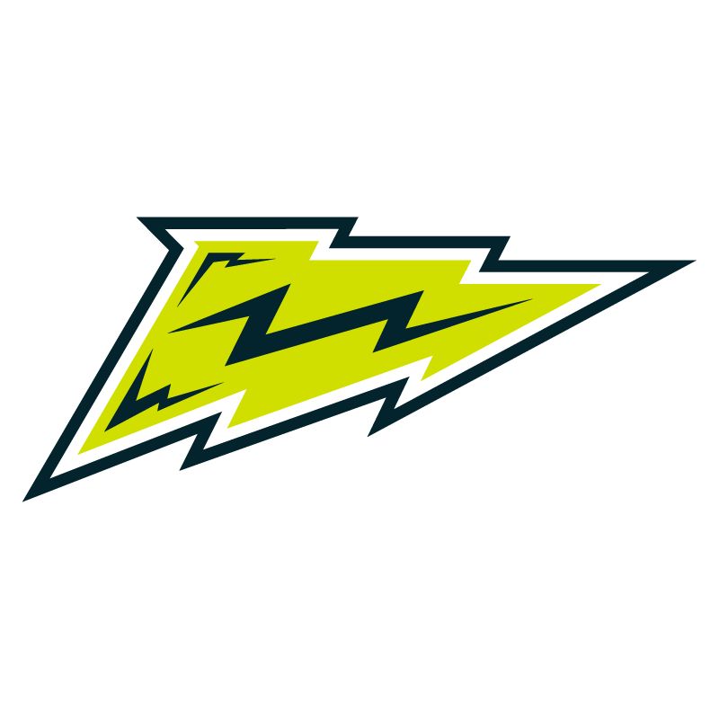
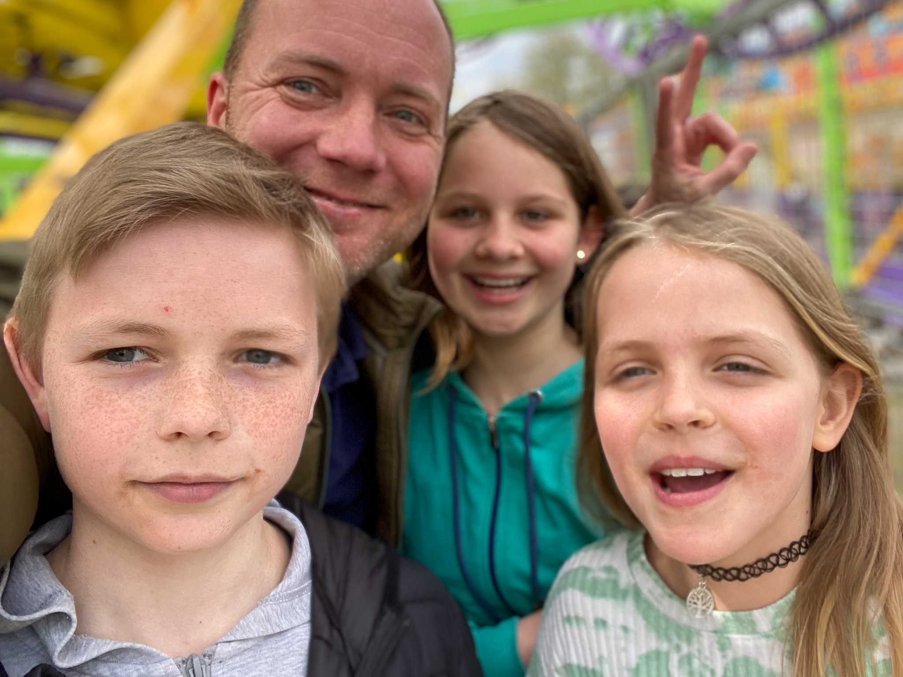

News
04.06.2022 - Das RegenbogenReich repariert ... Turbos Bike
Das entsprechende Video findet ihr unter ...05.06.2022 - RegenbogenReich reist ... zum Heimspiel der Stuttgart Surge gegen die Barcelona Dragons
 vs15.05.2022 - Das Regenbogenreich ist jetzt auch sicher unterwegs :-)
Die Homepage ist jetzt nicht nur unter http://regenbogenreich.eu erreichbar, sondern auch unter https://regenbogenreich.eu". Ist Euch der Unterschied aufgefallen?Es ist das kleine s bei https das am Ende bei http dazu gekommen ist. Das s steht für "sicher" oder "secure". Wird die Homepage mit https anstelle von http aufgerufen, wird der gesamte Datenverkehr verschlüsselt durchgeführt. Dies ist für niemand anderen lesbar, also sicherer. Die Verschlüsselung ist für eine normale Homepage nicht unbedingt notwendig. Bei Homepages mit persönlichem Login, Passwörtern und so aber unbedingt zwingend erforderlich. Weitere Infos bei Youtube
01.05.2022 - Regenbogenreich reist ... zum Frühlingsfest auf die Cannstatter Wasen
Bei ziemlich gutem Wetter ging es heute auf das Frühlingsfest. Neben Rollercoastern und rumgeballere wurden auch reichlich Schokofrüchte genascht.Reporterin Eva war vor Ort und testet fleissig die eine oder andere Attraktion.

Mehr Informationen zum Frühlingsfest.
30.04.2022 - Minecraft
Update: Der Stream findet leider doch nicht statt. Die Akteure konnten sich mal wieder nicht einigen. :-(Heute werden Blitzkeko und Supermaeh Minecraft zocken und live auf Youtube streamen.
Etwas Hintergrundinformation
Das Regenbogenreich wurde ursprünglich als Idee eines Familienrestaurants von unserem Gründervater Blitzkeko ersonnen. Auch wenn aus einem richtigen Restaurant noch nichts geworden ist, so ist doch die Grundidee lebendig geworden: "Zusammen in der Familie und mit Freunden kreativ sein, Dinge erforschen und ausprobieren".Das Erstellen von Kochvideos, als auch Kochen im privaten Rahmen, ist nach wie vor eines der Hauptaktivitäten. Mit der Zeit haben sich aber auch weitere Themengebiete dazu gesellt. Dies sind aktuell:
- Regenbogenreich Minecraft Server - ein eigener Minecraft Server
- Rainbow Racing - Seifenkiste und RC-Autos bauen und racen
- Regenbogenreich zockt - Youtube Gaming Videos
- Regenbogenreich Technik - Diverse Aktivitäten rund um Technik, wie LED Ketten basteln und steuern, Homepages designen etc ...
- ... und natürlich: Das Restaurant